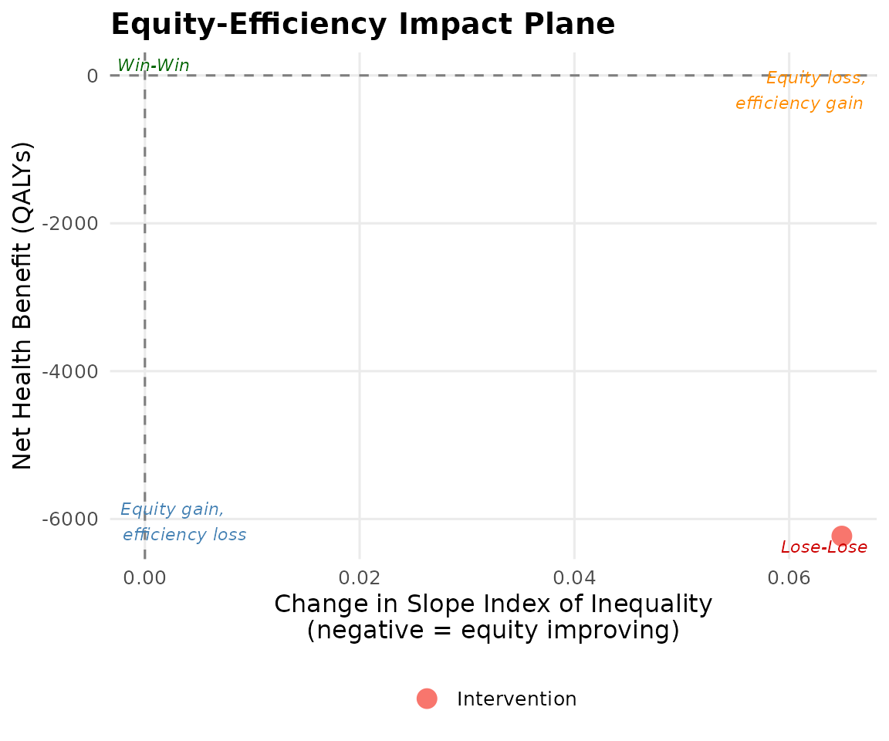
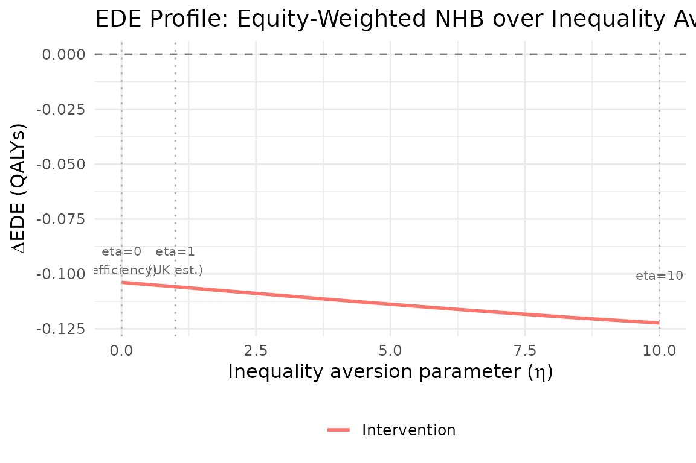

Aggregate DCEA Tutorial
Source:vignettes/02_aggregate_dcea_tutorial.Rmd
02_aggregate_dcea_tutorial.RmdOverview
This tutorial walks through aggregate DCEA step-by-step for a hypothetical NSCLC (lung cancer) treatment, following the Love-Koh et al. (2019) method.
Step 1: Define CEA inputs
icer <- 28000 # £/QALY
inc_qaly <- 0.45 # incremental QALYs per patient
inc_cost <- 12600 # incremental cost per patient (£)
population_size <- 12000 # eligible patients in England
wtp <- 20000 # NICE standard WTP (£/QALY)
occ_threshold <- 13000 # opportunity cost threshold (£/QALY)Step 2: Load baseline health distribution
baseline <- get_baseline_health("england", "imd_quintile")
baseline
#> # A tibble: 5 × 14
#> imd_quintile group quintile_label group_label mean_hale mean_hale_all
#> <int> <int> <chr> <chr> <dbl> <dbl>
#> 1 1 1 Q1 (most deprived) Q1 (most depri… 52.1 52.1
#> 2 2 2 Q2 Q2 56.3 56.3
#> 3 3 3 Q3 Q3 59.8 59.8
#> 4 4 4 Q4 Q4 63.2 63.2
#> 5 5 5 Q5 (least deprived) Q5 (least depr… 66.8 66.8
#> # ℹ 8 more variables: mean_hale_male <dbl>, mean_hale_female <dbl>,
#> # se_hale <dbl>, se_hale_all <dbl>, pop_share <dbl>, cumulative_rank <dbl>,
#> # year <int>, source <chr>Step 3: Run aggregate DCEA
result <- run_aggregate_dcea(
icer = icer,
inc_qaly = inc_qaly,
inc_cost = inc_cost,
population_size = population_size,
disease_icd = "C34",
wtp = wtp,
opportunity_cost_threshold = occ_threshold
)Step 4: Interpret outputs
summary(result)
#> == Aggregate DCEA Result ==
#> ICER: £28,000 / QALY
#> Incremental QALY: 0.4500
#> Incremental cost: £12,600
#> Population size: 12,000
#> Net Health Benefit: -6230.77 QALYs
#> SII change: 0.0649
#> Decision: Lose-Lose (efficiency loss + equity loss)
#>
#> -- Per-group results --
#> # A tibble: 5 × 4
#> group_label baseline_hale post_hale nhb
#> <chr> <dbl> <dbl> <dbl>
#> 1 Q1 (most deprived) 52.1 52.0 -1558.
#> 2 Q2 56.3 56.2 -1402.
#> 3 Q3 59.8 59.7 -1246.
#> 4 Q4 63.2 63.1 -1090.
#> 5 Q5 (least deprived) 66.8 66.7 -935.
#>
#> -- Inequality impact --
#> # A tibble: 4 × 5
#> index pre post change pct_change
#> <chr> <dbl> <dbl> <dbl> <dbl>
#> 1 sii 18.2 18.2 0.0649 0.358
#> 2 rii 0.304 0.306 0.00162 0.533
#> 3 gini 0.0487 0.0490 0.000259 0.533
#> 4 atkinson_1 0.00374 0.00379 0.0000402 1.07Per-group results
result$by_group
#> # A tibble: 5 × 10
#> group group_label baseline_hale post_hale pop_share patient_share n_patients
#> <int> <chr> <dbl> <dbl> <dbl> <dbl> <dbl>
#> 1 1 Q1 (most dep… 52.1 52.0 0.2 0.25 3000
#> 2 2 Q2 56.3 56.2 0.2 0.225 2700
#> 3 3 Q3 59.8 59.7 0.2 0.2 2400
#> 4 4 Q4 63.2 63.1 0.2 0.175 2100
#> 5 5 Q5 (least de… 66.8 66.7 0.2 0.15 1800
#> # ℹ 3 more variables: health_gain_qaly <dbl>, opp_cost_qaly <dbl>, nhb <dbl>Step 5: Visualise
plot_equity_impact_plane(result)
plot_ede_profile(result, eta_range = seq(0, 10, 0.2))
Step 6: Generate NICE submission table
generate_nice_table(result, format = "tibble")
#> # A tibble: 6 × 6
#> `Equity subgroup` `Baseline HALE (years)` `Post-intervention HALE (years)`
#> <chr> <dbl> <dbl>
#> 1 Q1 (most deprived) 52.1 52.0
#> 2 Q2 56.3 56.2
#> 3 Q3 59.8 59.7
#> 4 Q4 63.2 63.1
#> 5 Q5 (least deprived) 66.8 66.7
#> 6 Total / Summary NA NA
#> # ℹ 3 more variables: `Change in HALE (years)` <dbl>,
#> # `Net Health Benefit (QALYs)` <dbl>, `Population share` <chr>References
Love-Koh J et al. (2019). Value in Health 22(5): 518-526. https://doi.org/10.1016/j.jval.2018.10.007